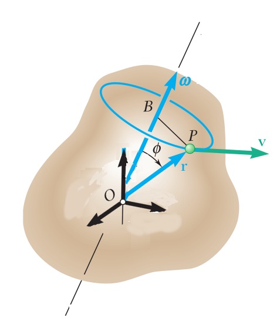
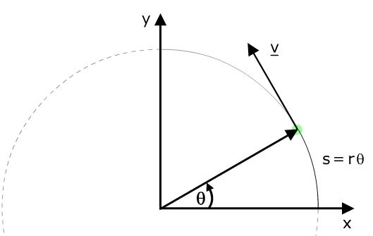
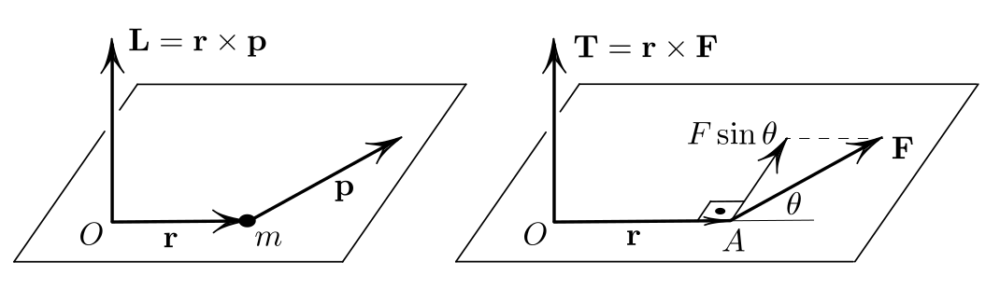

İzafi Enerji Formülü
İzafi mekanikte kuvvet ve momentumdan başlayan formül biraz daha değişiyor [4].
$$ F = \frac{\mathrm{d} (mv)}{\mathrm{d} t} $$
tanımında $m$'in değişmediğini farz etmiştik. Fakat izafi mekanikte enerji uygulandıkça kütlenin büyüdüğünü göz önüne almak lazım. Bu büyüme faktörü $\gamma = \left(1 - \frac{v^2}{c^2} \right)^{-1/2}$, yani bu faktöre oranla kütle büyüyecek. Entegral şu hale geliyor,
$$ E_k = \int _{0}^{t} \frac{\mathrm{d} (\gamma mv)}{\mathrm{d} t} \mathrm{d} x $$
Bu entegral biraz daha karmaşık ama sonunda
$$ E_k = (\gamma - 1)mc^2 $$
elde ederiz. Yani kütleyi daha fazla hızlandırmak için gittikçe daha fazla iş yapmak gerekir çünkü enerji eklendikçe kütle daha ağırlaşır.
Dönüşler, Dönme Direnci (Moment of Inertia)
Saat yönü tersi yönde bir dönüş düşünelim, $s$ kadar dönüş olduysa, orijine uzaklık $r$ ise, açısal mesafe [1, sf. 297]
$$ \theta = \frac{s}{r} $$
ki $\theta$ radyan. Ya da
$$ s = r \theta $$
Çemberin tamamı $2\pi$ rad (tam bir dönüş), meselâ 60 derece $\pi / 3$ rad. Çemberin çevresinin formülü $2\pi r$, eğer $\theta = \pi / 3$ rad ise, $s = \pi / 3 \cdot r $.
Açısal hızı bir $P$ noktasının teğetsel hızından yola çıkarak hesaplayabiliriz, bu noktanın teğetsel hızı sonsuz ufak $s$'nin zamana göre değişimi olacaktır, yani $v = ds / dt$,
$$ v = \frac{ds}{dt} = r \frac{d\theta}{dt} $$

Elde edilen $d\theta / dt$ açısal değişimi gösteriyor, bu işte açısal hızdır, ona $\omega$ diyelim, o zaman teğetsel hızı açısal hız ile şöyle gösterebiliriz,
$$ v = r\omega $$
Formül diyor ki dönen bir katı objenin herhangi bir noktasının teğetsel hızı, o noktanın dönüş eksenine olan uzaklığı çarpı açısal hızına eşittir. O zaman, her ne kadar katı objenin her noktası aynı açısal hızla dönüyor olmasına rağmen her noktanın lineer hızı aynı değildir, çünkü $r$ her nokta için aynı değil. Üstteki formül dönüş merkezinden uzaklaştıkça hızın artacağını söylüyor. Teğetsel hızı hayal etmek için o noktada ayakta durabiliyor olsak yüzümüze çarpacak rüzgar hızını hayal edebiliriz.
İvmeyi de dahil edelim, açısal ivme ile teğetsel ivmenin bağlantısına bakalım, $v$'nin zamana göre türevini alırsak,
$$ a_t = \frac{dv}{dt} = r \frac{d\omega}{dt} $$
$$ a_t = r \alpha $$
Dönüşsel Kinetik Enerji
Dönmekte olan katı bir objenin kinetik enerjisini nasıl hesaplarız?

Objenin en ufak parçalarından başlayarak bunu yapmaya uğraşalım. Obje $z$ ekseni etrafında dönüyor olsun, ve açısal hızı $\omega$ diyelim. Obje içindeki her parçacık $i$'nin kütlesi $m_i$ diyelim, kinetik enerji bu parçacığın lineer hızına bağlıdır (objenin her parçacığı aynı açısal hızda döner ama farklı noktalarda lineer hız $v_i$ farklı olabilir, $v_i = r_i \omega$ üzerinden), o zaman her parçacık için kinetik enerji [1, sf. 299]
$$ K_i = \frac{1}{2} m_i v_i^2 $$
ile gösterilebilir. Tüm obje için,
$$ K_R = \sum_i K_i = \sum_i \frac{1}{2} m_i v_i^2 = \frac{1}{2} \sum_i m_i r_i^2 \omega^2 $$
Bu ifadede $\omega^2$'yi dışarı çekebiliriz, çünkü her parçacık için aynı,
$$ K_R = \frac{1}{2} \left( \sum_i m_i r_i^2 \right) \omega^2 $$
Parantez içindeki ifadeye bir isim verip değişken atayarak daha da işi basitleştirebiliriz, bu ifadeye dönme direnci (moment of inertia) ismi verilir,
$$ I \equiv \sum_i m_i r_i^2 $$
$I$'nin birimi $kg \cdot m^2$'dir, bu notasyonla nihai denklem
$$ K_R = \frac{1}{2} I \omega^2 $$
haline gelir.
Umarım lineer hareketin kinetik enerjisi $\frac{1}{2} m v^2$ ile dönüşsel hareketteki kinetik enerji $\frac{1}{2} I \omega^2$ arasındaki benzerlik dikkati çekmiştir. Lineerden dönüşsele geçerken / karşılaştırmalı düşünürken $I$ hep $m$ yerine geçer, böyle görülür. Dönme direnci $I$ aynen isminin çağrıştırdığı gibi bir kütlenin dönmeye olan gösterdiği dirençtir, aynen bir objenin kütlesinin lineer harekete olan gösterdiği direnç olması gibi.
Önemli bir nokta daha, $I$ formülündeki $r_i$ dikkati çekmiştir, her $m_i$ parçacığının aynı birim ağırlıkta olduğunu farzetsek bile objenin farklı noktalarında dönüş eksenine farklı uzaklıklar olabilir, yani bu uzaklıklar objenin şekline göre değişik olacaktır. Mesela bir dikdörtgensel plakayı orta noktasından döndürüyorsak ene ve boya olan uzaklıklar farklı olacaktır. Bu sebeple tahmin edebileceğimiz üzere her obje için farklı $I$ hesabı olmalıdır. Bu hesabın detayları için [1, sf. 301]'e bakılabilir. İki örnek obje için $I$ altta görülüyor.

Tork (Torque)
Bir kuvvetin bir objeyi bir eksen etrafında döndürme kabiliyeti bir vektör büyüklüğü olan tork ile ölçülür. Dönme eksenine olan uzaklık burada önemli rol oynar, bir kapının kolu menteşeye olabildiği kadar uzaktır, çünkü mesafe arttıkça aynı kuvvet ile daha fazla dönme, daha çok tork elde edilir.

Tork her zaman dönme eksenine teğet olan kuvvet için hesaplanır, ve uzaklık, kol uzaklığı, kuvvetin uygulandığı noktada eksene olan uzaklıktır. Üstteki resimdeki tork $\tau$
$$ \tau = F \sin \phi = F d $$
ile hesaplanır, ki $d = r \sin\phi$ olarak tanımladık.
Dikkat, tork türetilebilecek bir kavram değildir, bir tanımdır. Dönme merkezine uzaklık çarpı kuvvet bazı kavramları biraraya getirmesi açısından faydalı, bu sebeple kullanılıyor.
Tork kuvvet ile karıştırılmamalı. Kuvvet lineer harekette değişiklik yaratır, kuvvet dönüşsel harekette de değişiklik yaratır, ama bu tür değişimde hem kuvvet hem de dönüş merkezine olan kol uzaklığı aynı oranda rol oynar.
Torkun birimi kuvvet çarpı uzunluk, yani Newton metredir. Diğer yandan yapılan iş (work) ve torkun birimleri aynıdır, ama bu iki kavram da birbirinden farklı.
Örnek
Çocuk parklarında tahtıravallı vardır, diyelim bir uçta şişman bir çocuk biniyor, 10 Newton güç uyguluyor. Diğer yanda daha zayıf çocuk, o 5 Newton güç uyguluyor. Bu tahtıravallı hala dengede durabilir, eğer dönme noktasına şişman çocuk 1 metre, diğeri 2 metre uzakta oturuyorlarsa. Niye? Çünkü bu durumda iki tarafın uyguladığı tork birbirine eşit olacaktır.
Açısal Hız (Angular Velocity)
Bir katı kütlenin herhangi bir eksen üzerinde döndüğünü düşünelim. Bu kütlenin bizim önceden sabitlediğimiz bir eksen sistemi olabilir, ama o eksenin herhangi bir kolu etrafında olması şart değil bu dönmenin, herhangi bir eksen.

Üstteki resimde [8, sf. 920] eksen $\bar{w}$ vektörü etrafında olarak gösterildi, ve açısal hızın büyüklüğü ise $\bar{w}$ vektörünün büyüklüğüne eşit, yani $|\bar{w}|$. Açısal hız en basit halde alttaki şekilde hareketle anlaşılabilir, $\theta$ açısının katettiği çembersel mesafe $r\theta$'dir, eğer zamansal $\theta(t)$ biliniyorsa, $\omega = \dot{\theta}$ bize açısal hızı, ve $v = r\omega$ ise teğetsel hız $v$'yi verir.

Üç boyutlu ortamda $v$ ve $r$ iki üstteki resimde görüldüğü üzere birer vektör olur, bu durumda açısal hız $v$'yi, daha doğrusu $\bar{v}$ vektörünü hesaplamanın bir diğer yolu,
$$ \bar{v} = \bar{\omega} \times \bar{r} $$
çapraz çarpımıdır. Bu nasıl oldu? Yine iki üstteki resme bakarsak hız için önce bize yarıçap lazım, semboller karışmasın artık yarıçap $r$ değil, $\bar{r}$ vektörü direk parçacığın yerine işaret ediyor, yarıçap $BP$ çizgisi. O çizgini uzunluğu [6, sf. 10] ($r$ değerini $\bar{r}$'nin uzunluğu olarak alalım) şu formül değil mi? $r\sin\phi$. Evet. O zaman $\omega$ açısal hızı ile çarparsak, açısal hız vektörü büyüklüğünü
$$ |\bar{v}| = r \sin\phi \omega $$
Bu bize bir büyüklük tabii, hala vektörsel değil. Peki bu büyüklüğü bir vektöre nasıl çeviririz? Açısal hızın yönünü birim vektör olarak kullansak? Evet, bu yönün her zaman $\bar{r}$ ve $\bar{\omega}$ vektörlerinin oluşturduğu düzleme dik olacağını biliyoruz, bu bize çapraz çarpım işlemini hatırlatmalı, o zaman
$$ \bar{v} = r \sin\phi \omega \left( \frac{\bar{\omega} \times \bar{r}}{| \bar{\omega} \times \bar{r} |} \right) $$
Daha basitleştirme yapmak mümkün, [7]'den hatırlarsak, $|\bar{\omega} \times \bar{r} | = \omega r \sin\phi$, üstte yerine koyarsak,
$$ = r \sin\phi \omega \left( \frac{\bar{\omega} \times \bar{r}}{\omega r \sin\phi} \right) $$
$$ = \bar{\omega} \times r $$
Peki $\bar{\omega} \times r$ formülünden $\vec{v}$'yi geri elde etmek mümkün mü?
Üstteki resme uygun durumlar için, $\bar{\omega}$ parçacık $\vec{r}$'sinin oluşturduğu çemberin düzleminden yukarı çıkıyor,
$$ \bar{v} = \bar{\omega} \times r $$
İki tarafı soldan $\bar{r}$ ile çapraz çarpalım,
$$ \bar{r} \times \bar{v} = \bar{r} \times (\bar{\omega} \times r) $$
Sağ taraf üzerinde "BAC-CAB açılımı" denen tekniği uygulayabiliriz, hatırlarsak, lineer cebirde
$$ A \times (B \times C) = B(A \cdot C) - C(A \times B) $$
Buna göre [9]
$$ = \bar{\omega} (\bar{r} \cdot \bar{r}) - \bar{r}(\bar{r} \cdot \bar{\omega}) $$
$\bar{r}$ ve $\bar{\omega}$ birbirine dik olduğuna göre noktasal çarpımları sıfırdır. $|\bar{r}|^2 = \bar{r} \cdot \bar{r}$, o zaman
$$ \bar{r} \times \bar{v} = \bar{\omega} |\vec{r}|^2 $$
$$ \bar{\omega} = \frac{\bar{r} \times \bar{v}}{|\vec{r}|^2} $$
Vektörel Formda Tork ve Açısal Momentum
Çok boyutlu dönüşsel ortamda momentumun ve kuvvetin karşılığı açısal momentum ve torktur, çok boyutlu ortamda bunları alttaki resimde görebiliriz,

$O$ noktasına referansla bir noktasal kütlenin açısal momentumu
$$ L = r \times m v = r \times p $$
ki $r$ referans $O$'ya göre olan yer vektörü, ve $v$ hız, $mv$ tabii ki momentum olur. Buradan hareketle $O$ seçiminin açısal momentum hesabını etkileyeceğini anlayabiliriz. Mesela bir kuyruklu yıldız güneşin yörüngesinde olduğu zaman bu dönüşün açısal momentumu güneşin merkezine göredir [5, sf. 81].
Tork benzer şekilde, bu sefer $r$ ile $F$ vektörleri üzerinden
$$ T = r \times F $$
Bu hesap ta yine $O$ referanslı, $r = \vec{OA}$. Eğer $r$'yi bir vida sıkıştıran pensenin kolu gibi düşünürsek vida $O$'da duruyor, ona uygulanan tork üstteki $T$ ile hesaplanıyor.
Kaynaklar
[1] Resnick, Fundamentals of Physics, 8th Ed
[2] Heuvel, Pool Hall Lessons: Fast, Accurate Collision Detection Between Circles or Spheres, https://www.gamasutra.com/view/feature/131424/pool_hall_lessons_fast_accurate_.php?print=1
[3] Wikipedia, Elastic collision, https://en.wikipedia.org/wiki/Elastic_collision
[4] Masson, Elastic Collisions in 3D, https://exploratoria.github.io/exhibits/mechanics/elastic-collisions-in-3d/index.html
[5] Levi, Classical Mechanics with Calculus of Variations and Optimal Control
[6] Schaub, Analytical Mechanics of Space Systems
[7] Bayramli, Cok Degiskenli Calculus, Ders 2
[8] Beer, {Vector Mechanics for Engnineers}
[9] Stackexchange, https://physics.stackexchange.com/questions/292822/how-to-derive-the-formula-for-angular-velocity-in-three-dimensions